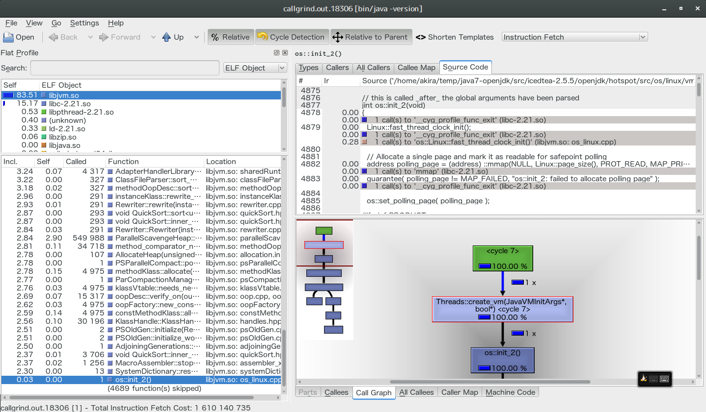

Table of Contents
今まで、JVM中身の調査は SystemTap + java-1.x.x-openjdk-debuginfo.x86_64 利用してい
たが。もう少しJVMの中身を踏み込みたいのでデバッグ版JVMをビルドしてみました。
http://hg.openjdk.java.net/jdk7/jdk7/raw-file/tip/README-builds.html の手順でビルドし
てもいいのですが、トライ・アンド・エラーで時間が取られそうなので、自分が使っている
Arch Linux 環境で一番手取りの早い手順で行いました。
1 環境
- Arch Linux
- OpenJDK 7系
2 ビルド手順
まずはパッケージリポジトリから jdk7-openjdk のビルドファイルやパッチファイルを入手する。
★ダウンロード $ wget https://projects.archlinux.org/svntogit/packages.git/plain/trunk/PKGBUILD?h=packages/java7-openjdk -O PKGBUILD $ wget https://projects.archlinux.org/svntogit/packages.git/plain/trunk/fontconfig-paths.diff?h=packages/java7-openjdk -O fontconfig-paths.diff $ wget https://projects.archlinux.org/svntogit/packages.git/plain/trunk/jdk7-openjdk.install?h=packages/java7-openjdk -O jdk7-openjdk.install $ wget https://projects.archlinux.org/svntogit/packages.git/plain/trunk/jre7-openjdk-headless.install?h=packages/java7-openjdk -O jre7-openjdk-headless.install $ wget https://projects.archlinux.org/svntogit/packages.git/plain/trunk/jre7-openjdk.install?h=packages/java7-openjdk -O jre7-openjdk.install $ wget https://projects.archlinux.org/svntogit/packages.git/plain/trunk/openjdk7_nonreparenting-wm.diff?h=packages/java7-openjdk -O openjdk7_nonreparenting-wm.diff ★ファイル一覧確認 $ ls -al 合計 52 drwxr-xr-x 2 akira users 4096 5月 10 11:24 . drwxr-xr-x 21 akira users 4096 5月 10 11:23 .. -rw-r--r-- 1 akira users 12429 5月 10 11:24 PKGBUILD -rw-r--r-- 1 akira users 8302 5月 10 11:24 fontconfig-paths.diff -rw-r--r-- 1 akira users 1053 5月 10 11:24 jdk7-openjdk.install -rw-r--r-- 1 akira users 974 5月 10 11:24 jre7-openjdk-headless.install -rw-r--r-- 1 akira users 1201 5月 10 11:24 jre7-openjdk.install -rw-r--r-- 1 akira users 2324 5月 10 11:24 openjdk7_nonreparenting-wm.diff
PKGBUILD ファイルにデバッグビルドオプションを有効化する。
--enable-native-debuginfo=yesbuild with native code debuginfo [default=yes]--enable-java-debuginfo=yesbuild with Java bytecode debuginfo [default=yes]make icedtea-debugデバッグビルドターゲットに変える
1 と 2 の規定値は yes なので、指定しなくても問題ありません。 3 が肝ですね。
..........省略.........
|build() {
| cd "${srcdir}/icedtea-${_icedtea_ver}"
|
| export ALT_PARALLEL_COMPILE_JOBS="${MAKEFLAGS/-j}"
| export HOTSPOT_BUILD_JOBS="${ALT_PARALLEL_COMPILE_JOBS}"
|
| . /etc/profile.d/apache-ant.sh
|
| cp "${srcdir}"/*.diff "${srcdir}"/icedtea-${_icedtea_ver}/patches
| export DISTRIBUTION_PATCHES="patches/fontconfig-paths.diff \
| patches/openjdk7_nonreparenting-wm.diff"
|
| if [ "$_bootstrap" = "1" ]; then
| BOOTSTRAPOPT="--enable-bootstrap --with-ecj-jar=/usr/share/java/ecj.jar"
| else
| BOOTSTRAPOPT="--disable-bootstrap"
| fi
|
| ./configure \
| ${BOOTSTRAPOPT} \
| --with-parallel-jobs="${MAKEFLAGS/-j}" \
| --disable-tests \
| --disable-downloading --disable-Werror \
| --with-pkgversion="Arch Linux build ${pkgver}-${pkgrel}-${CARCH}" \
| --with-jdk-home=${JAVA_HOME} \
| --with-openjdk-src-zip="${srcdir}/icedtea_${_icedtea_ver}_openjdk.tar.bz2" \
| --with-hotspot-src-zip="${srcdir}/icedtea_${_icedtea_ver}_hotspot.tar.bz2" \
| --with-corba-src-zip="${srcdir}/icedtea_${_icedtea_ver}_corba.tar.bz2" \
| --with-jaxp-src-zip="${srcdir}/icedtea_${_icedtea_ver}_jaxp.tar.bz2" \
| --with-jaxws-src-zip="${srcdir}/icedtea_${_icedtea_ver}_jaxws.tar.bz2" \
| --with-jdk-src-zip="${srcdir}/icedtea_${_icedtea_ver}_jdk.tar.bz2" \
| --with-langtools-src-zip="${srcdir}/icedtea_${_icedtea_ver}_langtools.tar.bz2" \
| --enable-nss \
| --with-rhino \
| --with-abs-install-dir=${_jvmdir} \
1.| --enable-native-debuginfo=yes \
2.| --enable-java-debuginfo=yes \
| --enable-infinality=no
| # TODO latest version of openjdk will disable infinality by default
|
3.| make icedtea-debug
|}
..........省略.........
あとは makepkg でビルドするだけです。コーヒーいっぱい分の時間かかります。
$ makepkg ==> パッケージを作成: java7-openjdk 7.u79_2.5.5-1 (2015年 5月 10日 日曜日 11:43:40 JST) ==> ランタイムの依存関係を確認... ==> ビルドタイムの依存関係を確認... ==> ソースを取得... ..........省略......... ★肝心のhotspotビルド ######################################################################## ##### Entering hotspot for target(s) all_debug ##### ######################################################################## ..........省略......... ★ビルド時のオプション g++ -DLINUX -D_GNU_SOURCE -DAMD64 -DASSERT -DDEBUG -I. -I/home/akira/temp/java7-openjdk/src/icedtea-2.5.5/openjdk/hotspot/src/share/vm/prims -I/home/akira/temp/java7-openjdk/src/icedtea-2.5.5/openjdk/hotspot/src/share/vm -I/home/akira/temp/java7-openjdk/src/icedtea-2.5.5/openjdk/hotspot/src/share/vm/precompiled -I/home/akira/temp/java7-openjdk/src/icedtea-2.5.5/openjdk/hotspot/src/cpu/x86/vm -I/home/akira/temp/java7-openjdk/src/icedtea-2.5.5/openjdk/hotspot/src/os_cpu/linux_x86/vm -I/home/akira/temp/java7-openjdk/src/icedtea-2.5.5/openjdk/hotspot/src/os/linux/vm -I/home/akira/temp/java7-openjdk/src/icedtea-2.5.5/openjdk/hotspot/src/os/posix/vm -I../generated -DHOTSPOT_RELEASE_VERSION="\"24.79-b02\"" -DHOTSPOT_BUILD_TARGET="\"jvmg\"" -DHOTSPOT_BUILD_USER="\"akira\"" -DHOTSPOT_LIB_ARCH=\"amd64\" -DHOTSPOT_VM_DISTRO="\"OpenJDK\"" -DDERIVATIVE_ID="\"IcedTea 2.5.5\"" -DDISTRIBUTION_ID="\"Arch Linux, package Arch Linux build 7.u79_2.5.5-1-x86_64\"" -march=x86-64 -mtune=generic -O2 -pipe -fstack-protector-strong --param=ssp-buffer-size=4 -DTARGET_OS_FAMILY_linux -DTARGET_ARCH_x86 -DTARGET_ARCH_MODEL_x86_64 -DTARGET_OS_ARCH_linux_x86 -DTARGET_OS_ARCH_MODEL_linux_x86_64 -DTARGET_COMPILER_gcc -DCOMPILER2 -DCOMPILER1 -fno-rtti -fno-exceptions -D_REENTRANT -fcheck-new -fvisibility=hidden -m64 -pipe -g -DTARGET_OS_FAMILY_linux -DTARGET_ARCH_x86 -DTARGET_ARCH_MODEL_x86_64 -DTARGET_OS_ARCH_linux_x86 -DTARGET_OS_ARCH_MODEL_linux_x86_64 -DTARGET_COMPILER_gcc -DCOMPILER2 -DCOMPILER1 -fpic -fno-rtti -fno-exceptions -D_REENTRANT -fcheck-new -fvisibility=hidden -m64 -pipe ★カスタマイズdebugビルドフラグ -g -finstrument-functions -fvar-tracking-assignments -rdynamic -D_NMT_NOINLINE_ -DVM_LITTLE_ENDIAN -D_LP64=1 -fno-omit-frame-pointer -DINCLUDE_TRACE=1 -Wpointer-arith -Wsign-compare -c -fpch -Deps -MMD -MP -MF ../generated/dependencies/osThread_linux.o.d -o osThread_linux.o /home/akira/temp/java7-openjdk/src/icedtea-2.5.5/openjdk/hotspot/src/os/linux/vm/osThread_linux.cpp Compiling /home/akira/temp/java7-openjdk/src/icedtea-2.5.5/openjdk/hotspot/src/os/linux/vm/os_linux.cpp ..........省略......... -- Build times ---------- Target all_product_build Start 2015-05-10 11:43:19 End 2015-05-10 12:41:39 00:09:54 corba 00:11:03 hotspot 00:01:15 jaxp 00:01:25 jaxws 00:31:45 jdk 00:02:58 langtools 00:58:20 TOTAL ------------------------- ..........省略.........
僕の環境では約1時間ぐらいかかりました。
- CPU: Intel(R) Core(TM) i5-2557M CPU @ 1.70GHz
- Memory: 4G
- SSD
ビルド成果物はワークディレクトリの下記場所に出力される。
| デバッグ版OpenJDK | src/icedtea-2.5.5/openjdk.build-debug |
| hotspot単体 | src/icedtea-2.5.5/openjdk.build-debug/hotspot/outputdir/linux_amd64_compiler2/jvmg |
3 gdbでデバッグしてみる
- hotspot単体の出力先へ移動する
-gdbオプションを付けて./hotspotを起動する- デバッグ版のJVMランチャーに既にBreakpointが設定されている
pで変数の値を確認するnextでステップオーバーでデバッグするstepでステップインでデバッグするbacktraceでスタックトレースを確認するcontinueで最後まで実行される
1.|$ cd src/icedtea-2.5.5/openjdk.build-debug/hotspot/outputdir/linux_amd64_compiler2/jvmg
2.|$ ./hotspot -gdb -version
|GNU gdb (GDB) 7.9
|Copyright (C) 2015 Free Software Foundation, Inc.
|License GPLv3+: GNU GPL version 3 or later <http://gnu.org/licenses/gpl.html>
|This is free software: you are free to change and redistribute it.
|There is NO WARRANTY, to the extent permitted by law. Type "show copying"
|and "show warranty" for details.
|This GDB was configured as "x86_64-unknown-linux-gnu".
|Type "show configuration" for configuration details.
|For bug reporting instructions, please see:
|<http://www.gnu.org/software/gdb/bugs/>.
|Find the GDB manual and other documentation resources online at:
|<http://www.gnu.org/software/gdb/documentation/>.
|For help, type "help".
|Type "apropos word" to search for commands related to "word".
|Breakpoint 1 at 0x4042f7: file /home/akira/temp/java7-openjdk/src/icedtea-2.5.5/openjdk/hotspot/src/share/tools/launcher/java.c, line 1270.
|[Thread debugging using libthread_db enabled]
|Using host libthread_db library "/usr/lib/libthread_db.so.1".
|Using java runtime at: /home/akira/temp/java7-openjdk/src/icedtea-2.5.5/bootstrap/jdk1.6.0/jre
|[New Thread 0x7ffff7fa6700 (LWP 15629)]
|[Switching to Thread 0x7ffff7fa6700 (LWP 15629)]
|
3.|Breakpoint 1, InitializeJVM (pvm=0x7ffff7fa5e38, penv=0x7ffff7fa5e30, ifn=0x7ffff7fa5e40)
| at /home/akira/temp/java7-openjdk/src/icedtea-2.5.5/openjdk/hotspot/src/share/tools/launcher/java.c:1270
|1270 memset(&args, 0, sizeof(args));
4.|(gdb) p args
|$1 = {version = 0, nOptions = 0, options = 0x0, ignoreUnrecognized = 0 '\000'}
5.|(gdb) next
|1271 args.version = JNI_VERSION_1_2;
|(gdb) next
|1272 args.nOptions = numOptions;
|(gdb) next
|1273 args.options = options;
|(gdb) next
|1274 args.ignoreUnrecognized = JNI_FALSE;
|(gdb) next
|1276 if (_launcher_debug) {
|(gdb) next
|1288 r = ifn->CreateJavaVM(pvm, (void **)penv, &args);
6.|(gdb) step
|JNI_CreateJavaVM (vm=0x7ffff7fa5e38, penv=0x7ffff7fa5e30, args=0x7ffff7fa5df0)
| at /home/akira/temp/java7-openjdk/src/icedtea-2.5.5/openjdk/hotspot/src/share/vm/prims/jni.cpp:5121
|5121 if (Atomic::xchg(1, &vm_created) == 1) {
7.|(gdb) backtrace
|#0 JNI_CreateJavaVM (vm=0x7ffff7fa5e38, penv=0x7ffff7fa5e30, args=0x7ffff7fa5df0)
| at /home/akira/temp/java7-openjdk/src/icedtea-2.5.5/openjdk/hotspot/src/share/vm/prims/jni.cpp:5121
|#1 0x00000000004043fd in InitializeJVM (pvm=0x7ffff7fa5e38, penv=0x7ffff7fa5e30, ifn=0x7ffff7fa5e40)
| at /home/akira/temp/java7-openjdk/src/icedtea-2.5.5/openjdk/hotspot/src/share/tools/launcher/java.c:1288
|#2 0x00000000004031ea in JavaMain (_args=0x7fffffffc080)
| at /home/akira/temp/java7-openjdk/src/icedtea-2.5.5/openjdk/hotspot/src/share/tools/launcher/java.c:423
|#3 0x00007ffff5c17374 in start_thread () from /usr/lib/libpthread.so.0
|#4 0x00007ffff595527d in clone () from /usr/lib/libc.so.6
8.|(gdb) continue
|Continuing.
|java version "1.7.0_79"
|OpenJDK Runtime Environment (IcedTea 2.5.5) (Arch Linux build 7.u79_2.5.5-1-x86_64)
|OpenJDK 64-Bit Server VM (build 24.79-b02-jvmg, mixed mode)
|[Thread 0x7ffff7fa6700 (LWP 16481) exited]
[Thread 0x7ffff7fa8740 (LWP 16477) exited]
[Inferior 1 (process 16477) exited normally]
(gdb) q
$
4 valgrindでコールグラフ出してみる
valgrindでコールグラフを出してみました。
必要なパッケージを入れておく。
$ sudo pacman -S valgrind $ sudo pacman -S kdesdk-kcachegrind
- デバッグ版OpenJDKの出力先へ移動する
valgrindカーバーしてjava -versionを実行するkcachegrindで出力結果を解析する
1.|$ cd src/icedtea-2.5.5/openjdk.build-debug 2.|$ valgrind --tool=callgrind bin/java -version |==18306== Callgrind, a call-graph generating cache profiler |==18306== Copyright (C) 2002-2013, and GNU GPL'd, by Josef Weidendorfer et al. |==18306== Using Valgrind-3.10.1 and LibVEX; rerun with -h for copyright info |==18306== Command: bin/java -version |==18306== |==18306== For interactive control, run 'callgrind_control -h'. |java version "1.7.0_79-debug" |OpenJDK Runtime Environment (IcedTea 2.5.5) (Arch Linux build 7.u79_2.5.5-1-x86_64) |OpenJDK 64-Bit Server VM (build 24.79-b02-jvmg, mixed mode) |==18306== |==18306== Events : Ir |==18306== Collected : 1610140735 |==18306== |==18306== I refs: 1,610,140,735 |$ ls -al callgrind.out.* |-rw------- 1 akira users 5003407 5月 10 12:50 callgrind.out.18306 3.|$ kcachegrind callgrind.out.18306
コールグラフ

バッチリですね！